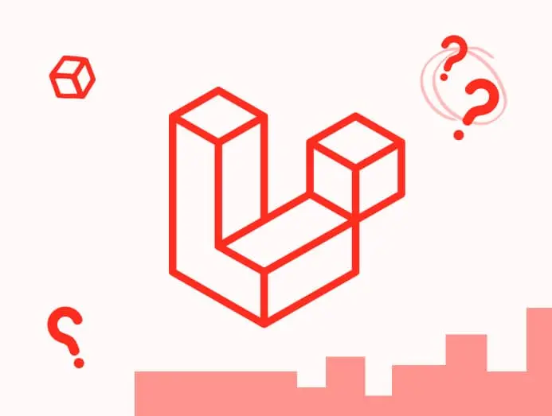

La veille technologique est une étape lors de notre formation professionnel scolaire et
personnelle qui nous permet d'apprendre davantage grâce aux informations disponibles autour de
nous :
Laravel est un framework web open-source écrit en PHP respectant le principe
modèle-vue-contrôleur et
entièrement développé en programmation orientée objet.
Laravel est distribué sous licence
MIT, avec ses
sources hébergées sur GitHub.
Parmi les nombreux framework web open-source Laravel est l'un des plus utilisés avec
codeigniter et symfony.
Mais son utilisation et sa documentation reste selon moi plus
simple à comprendre pour des étudiants.
Avec Laravel on peut crée son Api WEB de façon
très
complete.

C# est un langage de programmation développé par Microsoft, orienté objet et
principalement utilisé pour développer des applications sur la plateforme .NET.
WPF, ou Windows Presentation Foundation, est un framework de développement d'interfaces
utilisateur graphiques pour les applications Windows. Il offre une approche déclarative pour la
création d'interfaces riches et interactives, en utilisant XAML pour la conception et le style
des éléments graphiques.